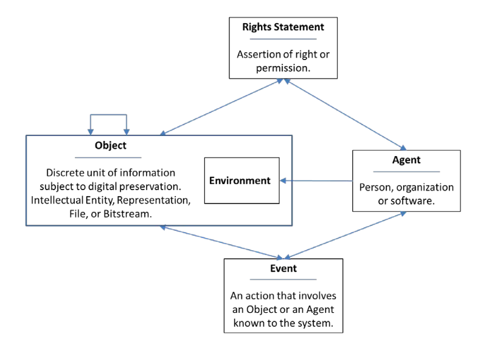
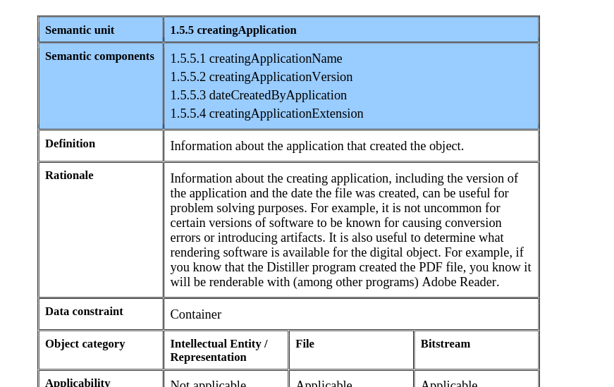

class: center, middle, titlepage ### FRI02: *Community and Resources.* --- class: contentpage ### **Agenda** 1. OAIS & PREMIS 2. Code Resources 3. How to Work With Other People's Code 4. Python linting/checking 5. Community, NTTW, Discord 6. FFmprovisor, FFmpeg Art School 7. LLM as code assistant --- class: contentpage ### **1. OAIS & PREMIS** .left[<img src="https://raw.githubusercontent.com/digitensions/summer-school-2024-local/main/friday/images/Screenshot 2024-09-26 at 20.25.03.png" width="980">] Open Archival Information System [ISO Standard 14721:2021](https://www.iso.org/standard/57284.html) --- class: contentpage ### **1. OAIS & PREMIS** There are six defined responsibilities for a digital archive in OAIS. These steps should be actions any archive, analogue or digital, would consider important co complete: >*1. Negotiate for and accept appropriate information from information producers* >*2. Obtain sufficient control of the information in order to meet long-term preservation objectives* >*3. Determine the scope of the archive’s user community* >*4. Ensure that the preserved information is independently understandable to the user community* >*5. Follow documented policies and procedures to ensure the information is preserved against all reasonable contingencies, and to enable dissemination of authenticated copies of the preserved information in its original form, or in a form traceable to the original* >*6. Make the preserved information available to the user community* --- class: contentpage ### **1. OAIS & PREMIS** .left[<img src="https://raw.githubusercontent.com/digitensions/summer-school-2024-local/main/friday/images/Screenshot 2024-09-26 at 20.25.03.png" width="980">] Open Archival Information System [ISO Standard 14721:2021](https://www.iso.org/standard/57284.html) --- class: contentpage ### **1. OAIS & PREMIS** PREMIS is another concept originating from Library of Congress, which defines an expected model for expressing information around digital preservation activity. This includes defining the entities of those involved in preservation activity: Objects, Events, Agents and Rights. .center[] --- class: contentpage ### **1. OAIS & PREMIS** These entities also have expected properties, instigating the collection of the sort of metadata required to properly contextualise digital preservation activity. https://service.tib.eu/webvowl/#iri=https://raw.githubusercontent.com/lcnetdev/PREMIS/refs/heads/master/premis3.owl --- class: contentpage ### **1. OAIS & PREMIS** If you were committed and your institutional database flexible enough, you could implement the model literally using the XML or OWL schemas. I am aware of a few instituttions who are doing this. Otherwise it could be a good reference to understand what data you should be consider collecting: who created this file, when, how? Was the filename changed? What are the access rights? .center[] --- class: contentpage ### **1. OAIS & PREMIS** The full specification can be found here. https://www.loc.gov/standards/premis/v3/index.html --- class: contentpage ### **2. Code Resources** Some places to go if you are interested in leaning more about Python, Bash, FFmpeg. Paul: - Matt Miller has a great series of videos on Programming for Cultural Heritage. They are a bit old but still great. https://videos.pfch.nyc/. His blog also contains heaps of fascinating experiments: https://thisismattmiller.com/ - If you are looking for a "proper" Python course, I would highly recommend the executeprogram course: https://www.executeprogram.com/courses/python-for-programmers - Ashley Blewer has an amazing blog around all things AV & Code: https://bits.ashleyblewer.com/ - Crash Course Computer Science is a good resource for "how does my computer work" https://www.youtube.com/playlist?list=PL8dPuuaLjXtNlUrzyH5r6jN9ulIgZBpdo --- class: contentpage ### **2. Code resources** Joanna: - Python offer their own Beginners Guide with many tutorials, videos and interactive learning resources [https://wiki.python.org/moin/BeginnersGuide/Programmers](https://wiki.python.org/moin/BeginnersGuide/Programmers) - Free Introduction to programming with Python provided by Harvard University, a great refresh and deeper dive into the fundamentals of Python [https://www.edx.org/learn/python/harvard-university-cs50-s-introduction-to-programming-with-python](https://www.edx.org/learn/python/harvard-university-cs50-s-introduction-to-programming-with-python) - A great podcast `Talk Python To Me` that chats to developers in different fields who write code or libraries for Python. Always uplifting and surprisingly informative, great for a regular commute or running companion [https://talkpython.fm/](https://talkpython.fm/) - Corey Schafer's YouTube channel provides 200+ free Python instructional videos which provide guidance and comparisons to different features of Python and libraries [https://www.youtube.com/channel/UCCezIgC97PvUuR4_gbFUs5g](https://www.youtube.com/channel/UCCezIgC97PvUuR4_gbFUs5g) --- class: contentpage ### **2. Code resources** Joanna: - FFmpeg Cookbook for Archivists by Reto Kromer. Provides lots of different encodings for many different scenarios, and also provides FFmpeg installation guides incase you need to do that again! [https://avpres.net/FFmpeg/](https://avpres.net/FFmpeg/) - Community Owned digital Preservation Tool Registry (COPTR) contains 610 open-source tools and 36 open-source workflows to help with digital preservation [https://coptr.digipres.org/index.php/Main_Page](https://coptr.digipres.org/index.php/Main_Page) - Association of Moving Image Archivists (AMIA) Open Source Workflows contains a fairly extensive list of open-source goodies generated by global audiovisual archivists [https://github.com/amiaopensource/open-workflows](https://github.com/amiaopensource/open-workflows) --- class: contentpage ### **3. How to Work With Other People's Code** When you find some code you think is interesting, or may help with your own script development: > 1. Read it like logs, from the bottom up! Find that one thing you understand about the code you're interested in, and track backward from those actions from the back forward > 2. Chain together, in reverse, the steps the code takes to deliver that final desired result. This will help you understand someone else's workflow approach and in turn may shed light on your own decisions > 3. Look for where key variables are defined, what functions are used when, where source assets are collected and how you may be able to sub in your own source assets if adapting the code for your usage > 4. Get a test environment set up away from preservation workflows, install any dependencies needed (you're experts now!) and carefully change one thing at a time and note how that changes the outcome > 5. Contact the developer who made them! We don't mind having questions asked. It's exciting to think someone is taking inspiration from existing workflows and we love talking about this stuff! > 6. Be careful with your code choices, you can learn good and bad habits from code but exposing yourself to lots of code aligned to your needs will build you understanding of how to read/reuse other's hard work! --- class: contentpage ### **3. How to Work With Other People's Code** Some interesting code repositories worth investigating: - [CUNY Television mediamicroservices](https://github.com/mediamicroservices/mm) - bash code with FFmpeg interactivity and Homebrew install guides - [Blinken OSA workflows](https://github.com/BlinkenOSA/workflows) - AV preservation Python workflows in docker container - [Carnegie Hall repository](https://github.com/CarnegieHall) including MediaConch QC scripts, metadata matching in Python and other languages - [Puget Sound and Vision](https://github.com/pugetsoundandvision/audiotools) Bash scripts for audio preservation - [AMI Tools from New York Public Library](https://github.com/NYPL/ami-tools/tree/main) Python scripts to help manage NYPL audio media files - [BFIscripts](https://github.com/bfidatadigipres/BFI_scripts), [DPX Encoding](https://github.com/bfidatadigipres/dpx_encoding/tree/main/qnap_film) and [FFmpeg transcoding](https://github.com/bfidatadigipres/transcoding) - a combination of Python and Bash --- class: contentpage ### **4. Python linting/checking** When you write you first code there are tools you can install that will analyse your code. There are lots of different linters for different outcomes: - Type checkers verify proper use of type hints - `MyPy, Pyright, Pyre, Pytype` - Error linters point out syntax errors or other issues that will cause exceptions or crashes - `Pylint, Pyflakes, Flake8` - Style linters point out issues that don't cause bugs but highlight deviation from PEP-8 style guide - `Pylint, Flake8` - Packaging linters spot issues relating to packaging your code for distribution on PyPi - `Pyroma` - Security linters point out possible security vulnerabilities in your code - `Bandit, Dodgy` - Code formatters change the style of your code correcting whitespaces - `Black` - Dead code linters remove commented-out code, bad practise used instead of proper version control - `Vulture, Eradicate` - Docstring linters / formatters point out style issues with doc string (notes) not aligned to PEP-257 - `pydocstringformatter, docformatter` - Complexity Analyzers point out code that is too complex that it will impact readability - `mccabe, Radon` [Python Linter Comparison](https://inventwithpython.com/blog/2022/11/19/python-linter-comparison-2022-pylint-vs-pyflakes-vs-flake8-vs-autopep8-vs-bandit-vs-prospector-vs-pylama-vs-pyroma-vs-black-vs-mypy-vs-radon-vs-mccabe/) ```sh pip install pylint pylint my_python_code.py ``` Pylint is an error and style linter so will report breaking syntax as well as offering hints for better code styling. --- class: contentpage ### **5. Community, NTTW, Discord** No Time To Wait conference: https://mediaarea.net/NoTimeToWait There are eight years of conference videos available to view on the [MediaArea Youtube channel](https://www.youtube.com/@MediaAreaNet) Ashley Blewer's [Adventures in Reading FFmpeg Logs](https://www.youtube.com/watch?v=15ZUnR3Nx1k) is a must see for new FFmpeg users,. FOSDEM is an open source developer conference that runs in the first weekend in Febraury every year. Across two intense days around 1000 presenters talk about their projects. They make room themes, and there's always a Python room and an AV room (hosted by FFmpeg team). FOSDEM Conference usually at ULB Solbosch Campus, Brussels: https://fosdem.org/2025/ DPC: https://www.dpconline.org/ --- class: contentpage ### **6. FFmprovisor, FFmpeg Art School** FFmprovisr is an excellent resource for useful AV opensource related commands. https://amiaopensource.github.io/ffmprovisr/ FFmpeg Art School shows how much fun you can have with FFmpeg! https://amiaopensource.github.io/ffmpeg-artschool/scripts.html --- class: contentpage ### **7. LLM as code assistant** Worth noting that when you are working with code you can also of course make use of LLMs. This can be to write an example code to study, explain how some code works, or ask questions about your own code. --- class: center, middle, titlepage ### THANK YOU!